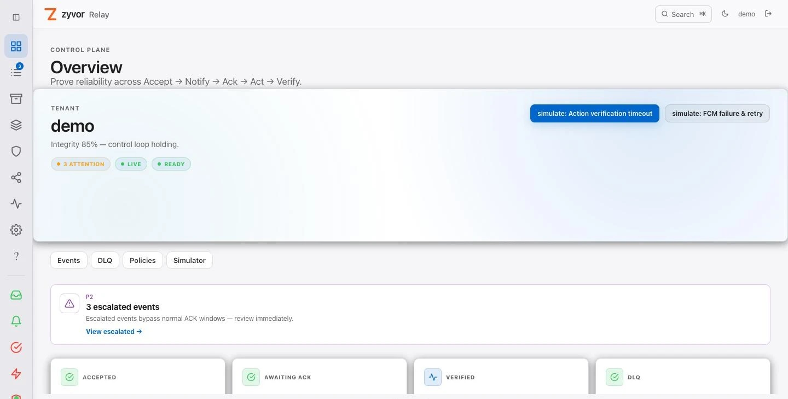
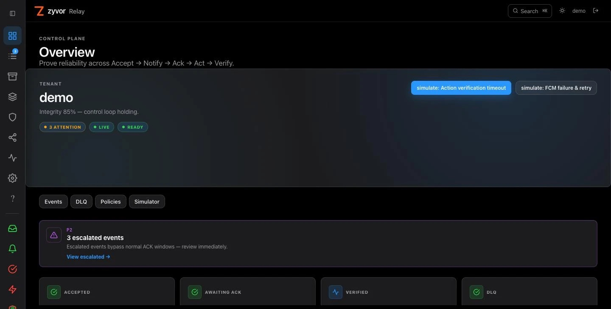

Durable
Accepted events are persisted before acknowledgement and survive restarts.
Zyvor Relay
The reliability control plane for durable events, acknowledged notifications, idempotent actions and verified outcomes.
Try the consoleSee how it works


Once Relay says yes, the event is on disk and tracked until a verified outcome. No silent drops. No double execution. No guesswork.
Accepted events are persisted before acknowledgement and survive restarts.
Notifications retry with backoff until a human or system confirms.
Critical actions execute once, even when the network repeats itself.
Outcomes are checked against reality, not assumed from a 200 OK.
The event is written durably before Relay answers. A repeated idempotency key returns the original event instead of a duplicate.
People and systems are told first, over push, email, SMS, chat and more, with backoff when delivery fails.
No acknowledgement means escalation, not silence. The loop stays open until someone owns the event.
Critical actions wait for approval and run once, protected by idempotency keys.
The outcome is checked against real telemetry. Only a verified event is a finished event.
Relay sits between the systems that raise events and the people and machines that must act on them.
| Capability | Typical retry queue | Zyvor Relay |
|---|---|---|
| Accepted events survive a crash | Depends on configuration | Persisted before acknowledgement |
| Duplicate side effects | Possible on retry | Idempotency keys fence actions |
| Someone owns the event | Delivery is the goal | Acknowledgement with escalation |
| Did it actually work? | A 200 OK counts | Verified against telemetry |
| Audit trail | Logs | Immutable per-event timeline |
A live simulation with fake data. Nothing leaves your browser.
The event has been written durably. If you send the same idempotency key again, Relay returns the original event instead of creating a second one.
No. Relay runs on a laptop, an edge VM, in Docker or on private Kubernetes such as k3s. Cloud adapters are optional.
As a single Go binary with the operator console embedded, backed by PostgreSQL or an in-memory store for trials. A Helm chart and k3s manifests are included.
Relay is licensed under Apache-2.0. The core repository is currently private; open components live at github.com/zyvorai.
No. The console above is a simulation running entirely in your browser with made-up data.